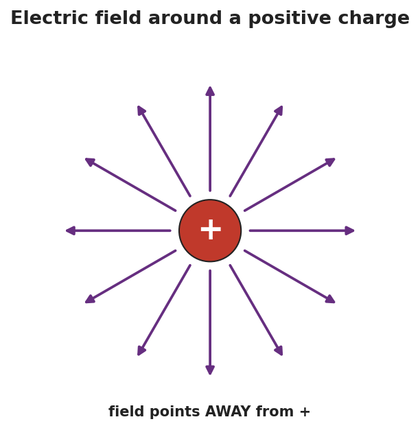

Unit: Electrostatics — Lesson 05: Electric Fields
Phenomenon
Your teacher holds a fluorescent tube near a plasma ball — it glows, even though it isn't plugged in or touching the ball. Move it away and it dims. Something is filling the space around the ball.

Driving Question
What is in the space around a charge, and how can we describe its direction and strength?
Notice & Wonder
Watch the bulb glow and dim as it moves. Write what you notice and what you wonder.
Initial Model
Draw the plasma ball. Around it, draw arrows showing how it would push or pull on a small positive test charge placed at several spots. Mark where the push would be strongest.
Investigate
A fixed source charge sits at the center. Faint grey arrows show the electric field (E) at sample points — longer near the source, shorter far away. Drag the yellow test charge: its black arrow is the force F = qE, pointing along the field and growing as you move closer. Flip the source sign to reverse every arrow.
Source: positive · Force on test charge: — (relative) · Direction: away from source
Make It Make Sense
- A 2.0 N force acts on a +0.5 C charge placed at a point. What is the electric field strength there? Show E = Fe/q.
- The field strength drops as you move away from the source. What shape is that fall-off, and where have you seen it before?
- Why do we use a positive test charge (and a small one) to define the field's direction?
Stuck? Sentence frame
"The electric field points ___ a positive charge and ___ a negative charge, and it is ___ (stronger / weaker) close to the source."
Key Vocabulary (max 3)
- electric field — the force per unit charge at a point in space around a charge: E = Fe / q, measured in newtons per coulomb (N/C)
- test charge — a tiny positive charge used to probe a field's direction and strength without disturbing it
- field strength — the magnitude of the electric field at a point; larger near the source and falling off as 1/r²
Revise Your Model
A field of 500 N/C exists at a point, pointing east. (a) What force would it exert on a +2.0 × 10⁻⁶ C charge placed there? (b) Which direction? Use Fe = E·q (≈ 1.0 × 10⁻³ N, east — a positive charge follows the field).
Return to the Phenomenon
Why does the fluorescent tube glow brighter the closer it is to the plasma ball? Answer in one sentence using field strength: the electric field is stronger closer to the ball, so it pushes the gas's charges harder and the tube glows brighter.
Exit Ticket + Closing Reflection
- Use E = Fe / q.
(a) A charge of +4.0 × 10⁻⁶ C feels a force of 0.012 N at a point. Calculate the electric field strength there, with units.
(b) Draw the field around a single negative charge — which way do the arrows point?
(c) In one sentence, explain what a "test charge" is and why it must be small. - Reflection: What part of the field map helped you "see" the invisible field? Whose idea helped you fix yours?